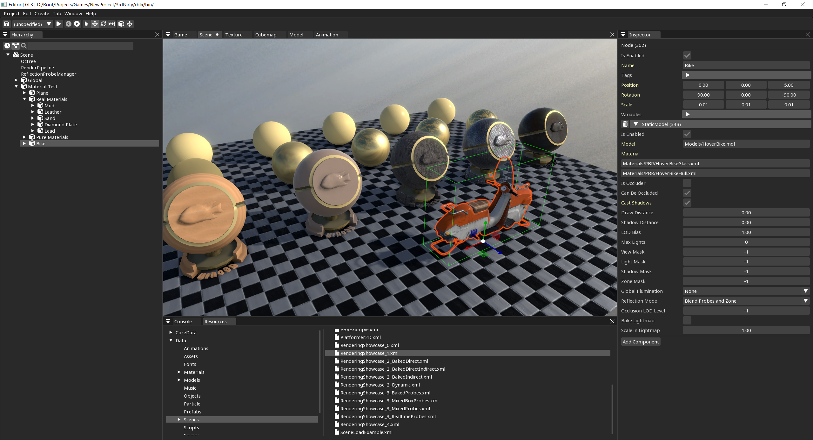

Rebel Fork Framework aka rbfx is an experimental fork of Urho3D game engine distributed under MIT license.
Rebel Fork Framework is:
- Free and Open Source Software, and it will stay this way;
- Suitable for 3D games and applications;
- Moderately lightweight and modular;
- Supported for Windows, Linux, MacOS, Android, iOS, Web and XBox (via UWP);
- Just a C++ library with a couple of tools;
- Also, there are experimental, optional C# bindings.
Note: The Framework is not yet released and is undergoing active development. Backward compatibility is (mostly) preserved on resource level, but C++ API is prone to changes.
"Quick start" guides
Currently there is no scripting languages available so you have to be either a C++ or C# developer to use the language.
- cpp-quick-start For C++ developers
- csharp-quick-start For C# developers
Reasons to use
There are multiple game engines out there, both proprietary and free. Here are some reasons why you may want to try this one:
- It's "code first" framework with full control over code execution, unlike Unity-like game engines with "IDE first" approach and script sandboxes.
- It's portable and relatively lightweight framework that can be used like any other third-party dependency, unlike huge mainstream game engines.
- It's a fork of the mature and stable Urho3D engine (which was released in 2011), so it's more feature-rich and well tested than many of the new non-mainstream game engines.
- If you already use Urho3D, you may want to try this framework if you like Urho3D but you are not fully satisfied with current Urho3D feature set.
Reasons NOT to use
Don't use the Framework if:
- You are not ready to write code when you need some feature. Just use Unity or any other mainstream engine with user store and ready-to-use assets.
- You want to have cutting-edge graphics or technology for AAA game. Just use Unreal Engine or any other graphics-oriented game engine.
- You are happy with Urho3D. This framework is not intended to be a replacement of Urho3D. Just keep using Urho3D.
- You want Urho3D but for C#. While this framework does have C# bindings, C# is not a first-class citizen here. Try using Urho.Net or any other C#-friendly engine.
Documentation
Main documentation page
Legacy documentation inherited from original Urho3D project
Disclaimer: It's hard to maintain complete and up-to-date documentation. Check main documentation page for the high-level feature overview and tutorials. If you need more details, check the source code and the examples. You may also check legacy Urho3D documentation for useful bits of information.
Pull Requests with documentation improvements are welcome.
Using the Framework
It is recommended to check out Sample Project on GitHub.
This project demonstrates full pipeline: from code and assets to build and publishing.
This project is automatically published to itch.io.
If you want to build the project or the Framework for your platform, it's recommended to check out how GitHub Actions are configured.
Links
Screenshots
